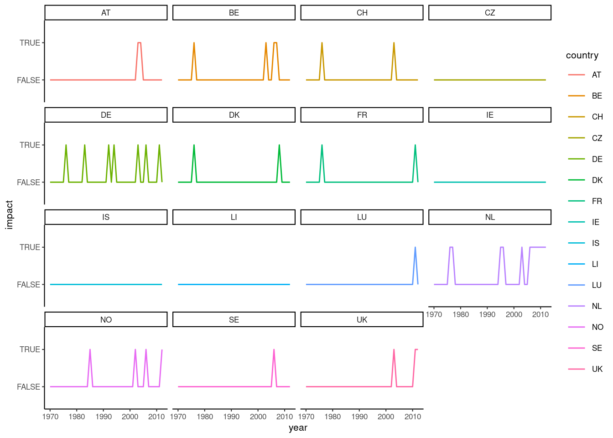
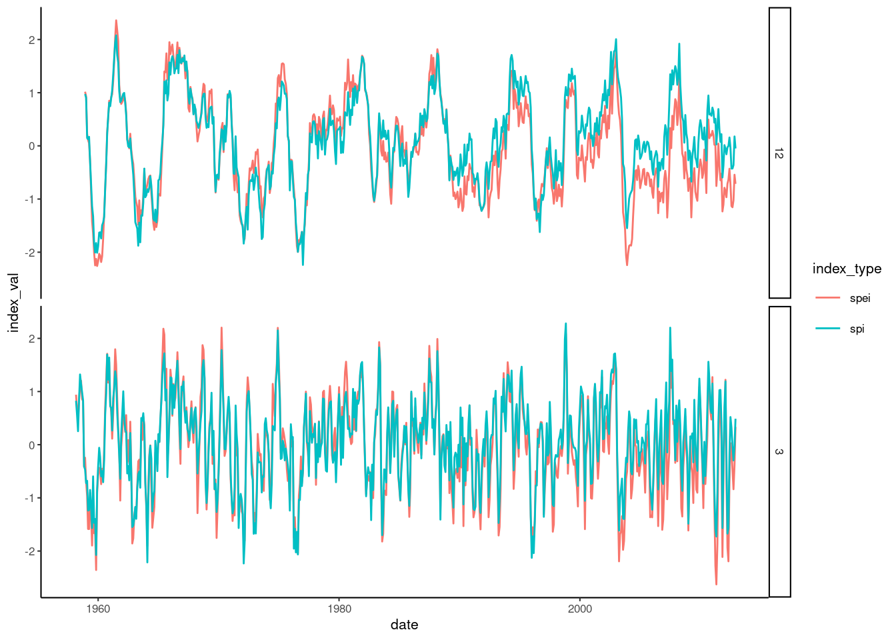
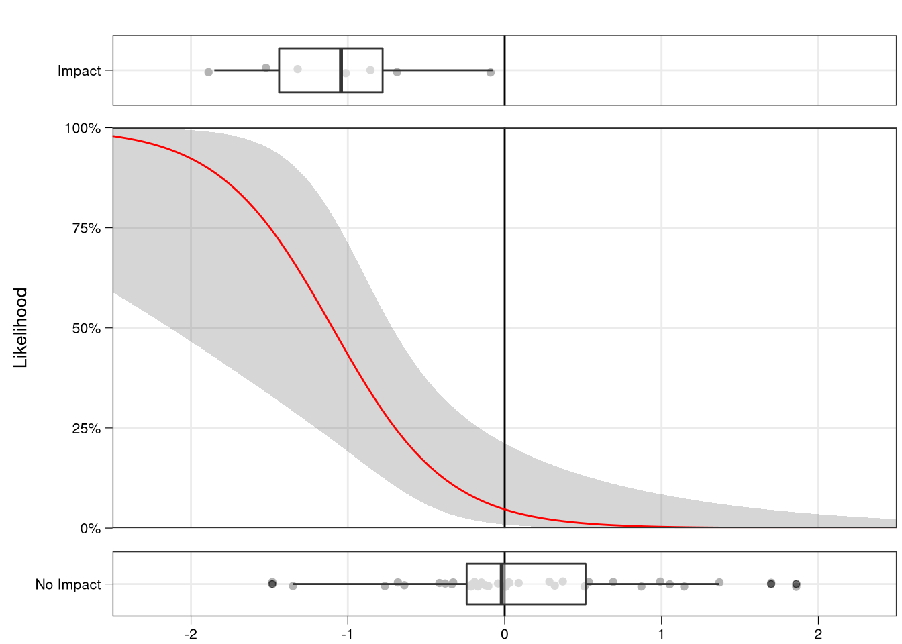
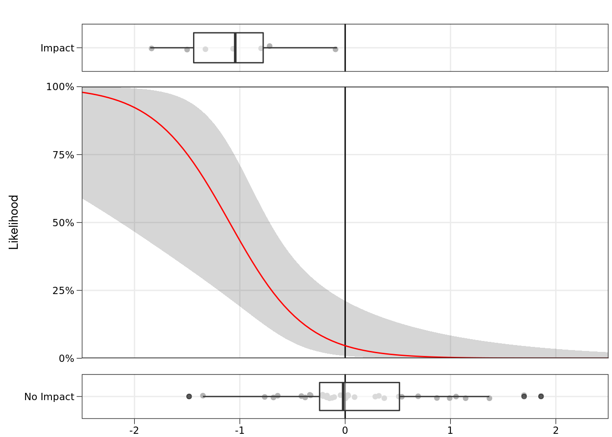

For this example, we will determine how agricultural drought impacts in Germany are related to drought severity, by defining an impact model and using it to make predictions of impact likelihood.
We will be considering 4 drought indices as potential predictors of drought impacts: the SPI3, SPEI3, SPI12, and SPEI12. See Section 5.5 for full definitions of the Standardized Precipitation Index (SPI) and Standardized Precipitation-Evapotransporation Index (SPEI). But for our purposes, we should know that the SPI3 normalizes precipitation from the preceding 3 months, while the SPI12 normalizes precipitation over the preceding 12 months. The SPEI uses the same number convention, but instead uses climatic water balance (precipitation minus reference potential evapotranspiration).
We begin by loading the agricultural drought impact data, collected annually, and the drought indices, which are all stored in the package hydroDrought. This data is loaded when the hydroDrought package is loaded. The SPI and SPEI data is provided at a monthly resolution, so we must reduce this to an annual resolution to match the impact series. We choose to filter only to July, based on our prior knowledge of agricultural practices.
library(tidyverse)
library(hydroDrought)
## Push these into the function
library(gridExtra)
library(grid)
spi_de <- spi_de %>%
filter(month == 7)
### Merge dataframes using a full join (i.e. all records are included, even if data is missing)
spi_impacts <- spi_de %>%
full_join(impacts_de, by = "year") %>% ### Join on year
drop_na(impact) %>% ### Drop rows with NA in the impact column
print(spi_impacts) ### Check results## # A tibble: 172 x 11
## date year month index_val index index_type index_months country impact_count nuts_n impact
## <date> <dbl> <dbl> <dbl> <chr> <chr> <chr> <chr> <int> <int> <lgl>
## 1 1970-07-01 1970 7 0.364 spei… spei 12 DE 0 13 FALSE
## 2 1971-07-01 1971 7 -0.605 spei… spei 12 DE 0 13 FALSE
## 3 1972-07-01 1972 7 -0.741 spei… spei 12 DE 0 13 FALSE
## 4 1973-07-01 1973 7 -0.758 spei… spei 12 DE 0 13 FALSE
## 5 1974-07-01 1974 7 -0.295 spei… spei 12 DE 0 13 FALSE
## 6 1975-07-01 1975 7 1.25 spei… spei 12 DE 0 13 FALSE
## 7 1976-07-01 1976 7 -1.88 spei… spei 12 DE 5 13 TRUE
## 8 1977-07-01 1977 7 -0.299 spei… spei 12 DE 0 13 FALSE
## 9 1978-07-01 1978 7 0.274 spei… spei 12 DE 0 13 FALSE
## 10 1979-07-01 1979 7 0.763 spei… spei 12 DE 0 13 FALSE
## # … with 162 more rowsAs a preliminary comparison, we can plot the time series of July SPEI3 (in blue) overlaid on the occurrence of annual impacts (vertical red bars).
### Only plot SPEI 3
plot_df <- spi_impacts %>%
filter(index == "spei_3")
### Extract the impacts for separate plotting
plot_impacts <- plot_df %>%
select(year, impact) %>%
filter(impact == TRUE) %>%
mutate(left = year - 0.5, right = year + 0.5)
### Create the time series plot
p <- ggplot(plot_df, aes(x=year)) %>%
+ geom_hline(yintercept=0, color = "grey70") %>% ### Make a horizontal axis at y= 0
+ geom_rect(data = plot_impacts, aes(xmin=left, xmax=right, ymin=-Inf, ymax=+Inf), fill='pink', alpha=0.9) %>% ### Create a pink region around the impact
+ geom_vline(data = plot_impacts, aes(xintercept = year), linetype="dotted", color = "red") %>% ### Add a vertical line at the impact
+ geom_line( aes(y = index_val), colour="#377eb8") %>% ### Draw the time series of SPI12
+ theme_classic(10) %>%
+ scale_x_continuous(name = "Year", breaks = seq(1950,2100,5)) %>%
+ scale_y_continuous(name = "SPEI-3 (July)", breaks = seq(-3,3,0.5))
pFigure 12.10 NEED CAPTION.
When SPEI3 is very negative (approximately -2) in 1975 an impact occurs, but when SPEI3 is near -1.5, we have two impact years (2003, 2006) and two non-impact years (1989, 2008). So, it appears that at an SPEI3 of -1.5, we have an approximately 50% chance of an impact. As we approach positive SPEI3, based on this data, the number of drought impacts drops to near 0 (there are no impact records in this database).
We can also visualise the relationship between SPEI3 and impact by plotting each value of SPEI3 from the time series along the x-axis and stacking the proportion of impact vs. no impact months along the y-axis (Fig. 12.11).
### Create a meaningful column for impacts when plotted
plot_all_df <- spi_impacts %>%
mutate(impact_label = case_when( impact == TRUE ~ "Impact Reported",
TRUE ~ "No Impact"
) ) %>%
mutate(impact_label = factor(impact_label, levels=c( "No Impact", "Impact Reported")))
### Create a smoothed plot showing proportion in each category
p <- ggplot(plot_all_df, aes(x=index_val, fill = impact_label)) %>%
+ geom_density(position = "fill") %>%
+ geom_vline(xintercept=0, color = "grey30", linetype="longdash") %>% ### Make a vartical axis at x= 0
+ theme_classic(8) %>%
+ scale_x_continuous(name = "Drought Index in July", breaks = seq(-5,5,0.5)) %>%
+ scale_y_continuous(name = "Proportion of Years in Impact Category", labels = scales::percent_format(accuracy = 5L), expand = c(0,0)) %>%
+ scale_fill_brewer(type = "qual", palette = "Set2") %>%
+ theme(legend.position = c(0.9, 0.9), legend.title = element_blank()) %>%
+ facet_wrap(~ index)
pFigure 12.11 NEED CAPTION.
The relationship for SPEI3 is shown in the top-right figure (Fig. 12.11b). If we approximate the boundary between impact years (orange) and non-impact years (green), it appears there is a consistent increase in impact proportion as SPEI-3 decreases (shifts from right to left).
SPEI3 appears to have the most consistent relationship with impacts (Fig 12.11b), whereas the relationship with SPI3 is confounded by some drought periods (low SPI) where the ‘No Impacts’ category dominates. If we chose a wider smoothing interval, this effect might be averaged out. For the 12-month accumulated indices (Fig 12.11a, 12.11c), years with impacts appear to be scattered throughout the SPI/SPEI range, suggesting a weaker connection. The likelihood of impacts increases for both severe drought and pluvials, further supporting the hypothesis that the 12-month indices are not useful for making the distinction between impact and no impact.
Figure 12.11 is a visual analogy of logistic regression, which is the more rigorous statistical method we will use to model the relationship between one or more predictors and a binary (TRUE/FALSE) predictand. Please keep this visual analogy in mind as we proceed using logistic regression to develop a quantitative impact model. For more methodological details, see Section 7.3.7, Generalized Linear Models.
In R, logistic regression models are calibrated using the glm() command, which can fit a range of Generalized Linear Models (GLMs).
### Create data for fitting
fit_data <- spi_impacts %>%
select(date, year, month, index, index_val, impact) %>%
spread(index, index_val)
### Fit simple logistic regression using SPEI-3 as a predictor variable
### Force an intercept to be included by using + 1
spei_3_fit <- glm(impact ~ spei_3 + 1, data = fit_data, family = "binomial")
summary(spei_3_fit)##
## Call:
## glm(formula = impact ~ spei_3 + 1, family = "binomial", data = fit_data)
##
## Deviance Residuals:
## Min 1Q Median 3Q Max
## -1.64740 -0.40334 -0.29607 -0.06872 2.39563
##
## Coefficients:
## Estimate Std. Error z value Pr(>|z|)
## (Intercept) -3.0242 0.8711 -3.472 0.000517 ***
## spei_3 -2.7561 0.9576 -2.878 0.004002 **
## ---
## Signif. codes: 0 '***' 0.001 '**' 0.01 '*' 0.05 '.' 0.1 ' ' 1
##
## (Dispersion parameter for binomial family taken to be 1)
##
## Null deviance: 38.207 on 42 degrees of freedom
## Residual deviance: 23.362 on 41 degrees of freedom
## AIC: 27.362
##
## Number of Fisher Scoring iterations: 6confint(spei_3_fit)## 2.5 % 97.5 %
## (Intercept) -5.181009 -1.634530
## spei_3 -5.049901 -1.167493The fitted model appears similar to our visual analogy (Figure 12.11), but now follows a formal logistic regression equation, with confidence intervals (Fig 12.12). As expected from our visual analogy, the likelihood of an impact is approximately 50% for SPEI3 of -1.1, near 100% for -2 and near 0 for positive values.
### Plot the relationship with SPEI-3
logistbarplot(log.fit = spei_3_fit, log.var = "spei_3")Figure 12.12 NEED CAPTION.
Remember from Section 7.2.3 that logistic regression converts likelihoods of a binary response into log-odds space (also called logit space). When a line fit in this space is transformed back to probability space, it produces the characteristic S-shape curve between 0 and 1. If we had used linear regression without the logit transform, we might have produced likelihoods greater than 1 or less than 0, which are not feasible. Check the supplementary code in the repository to see the full conversion from data into log-odds space and ultimately the logistic regression.
It is now possible to make predictions based on this relationship for our fitting period or for any new values of SPI or SPEI. In R this is easily done using the predict() function.
### Use the SPEI3 regression to predict the likelihood of an impact
### Keep the standard error for confidence intervals around prediction
predict_ts <- predict(spei_3_fit, newdata = fit_data, type = "link", se = TRUE)
### Add in prediction and confidence intervals
predict_df <- fit_data %>%
mutate(predict = plogis(predict_ts$fit)) %>%
mutate(predict_upper = plogis(predict_ts$fit + (qnorm(0.025) * predict_ts$se.fit))) %>%
mutate(predict_lower = plogis(predict_ts$fit - (qnorm(0.025) * predict_ts$se.fit))) %>%
select(-spi_3, -spei_12, -spi_12) %>%
print()## # A tibble: 43 x 8
## date year month impact spei_3 predict predict_upper predict_lower
## <date> <dbl> <dbl> <lgl> <dbl> <dbl> <dbl> <dbl>
## 1 1970-07-01 1970 7 FALSE -0.211 0.0801 0.0207 0.264
## 2 1971-07-01 1971 7 FALSE -0.171 0.0723 0.0177 0.253
## 3 1972-07-01 1972 7 FALSE 1.05 0.00266 0.0000819 0.0801
## 4 1973-07-01 1973 7 FALSE -0.175 0.0730 0.0179 0.254
## 5 1974-07-01 1974 7 FALSE 1.14 0.00207 0.0000540 0.0739
## 6 1975-07-01 1975 7 FALSE 0.0892 0.0366 0.00599 0.193
## 7 1976-07-01 1976 7 TRUE -1.85 0.889 0.427 0.988
## 8 1977-07-01 1977 7 FALSE -0.415 0.132 0.0443 0.335
## 9 1978-07-01 1978 7 FALSE 0.00736 0.0455 0.00847 0.210
## 10 1979-07-01 1979 7 FALSE -0.328 0.107 0.0323 0.301
## # … with 33 more rowsMaking predictions based on the original training data, we can now see (Fig. 12.13) that during most years the likelihood of an agricultural impact remains below 10%. In years with low SPEI3, the likelihood quickly peaks. In 1976, our most severe drought in this period, the predicted likelihood is approximately 90%. Not surprisingly, an impact occurs during this period. For a predicted likelihood of 50%, there are approximately the same number of years with impacts as those without, a sign of a good fit. Also, notice that the prediction intervals are not normally distributed around the estimate. They are normally distributed in logit (log-odds) space, but have been converted into impact likelihood, ensuring that neither the estimate nor the interval produces impossible likelihoods (< 0 or > 1). The supplementary code shows the process testing whether how to include a second drought index as a significant predictor.
### Create a time series plot
p <- ggplot(predict_df, aes(x=year)) %>%
+ geom_hline(yintercept=0.5, color = "grey70", linetype="dotted") %>% ### Make a horizontal axis at y= 0
+ geom_rect(data = plot_impacts, aes(xmin=left, xmax=right, ymin=-Inf, ymax=+Inf), fill='pink', alpha=0.9) %>% ### Create a pink region around the impact
# + geom_vline(data = plot_impacts, aes(xintercept = year), linetype="dotted", color = "red") %>% ### Add a vertical line at the impact
+ geom_ribbon(aes(ymin = predict_lower, ymax = predict_upper), alpha = 0.2, fill = "grey20") %>%
+ geom_line( aes(y = predict), colour="#377eb8") %>% ### Draw the time series of SPI12
+ theme_classic(8) %>%
+ scale_x_continuous(name = "Year", breaks = seq(1950,2100,5)) %>%
+ scale_y_continuous(name = "Impact Likelihood", breaks = seq(0,1,0.1), labels = scales::percent_format(accuracy = 5L), expand=c(0,0))
pFigure 12.13 NEED CAPTION.
